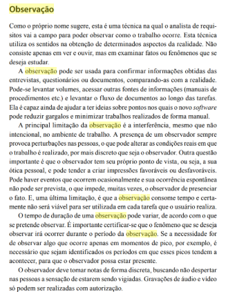
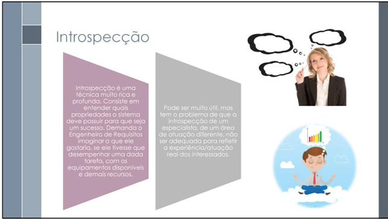

Verificação do grupo
Introdução
Este documento apresenta a lista de verificação elaborada para avaliar os artefatos produzidos na Entrega 2: Elicitação – Técnicas e Priorização. A lista foi baseada nos critérios definidos pelo professor André Barros de Sales e será utilizada para inspeção tanto do próprio grupo quanto do grupo +1.
Lista de Verificação
Tabela 1: Lista de Verificação — Elicitação e Priorização
| Item | Autor | Referência |
|---|---|---|
| 1. A Especificação do Perfil do usuário possui informações de: idade, experiência, atitudes e tarefas primárias? | André Barros de Sales |  Lista de Verificação da Etapa 2 Lista de Verificação da Etapa 2 |
| 2. Existe um cronograma (data, horário e local) para realização da elicitação dos requisitos com o cliente/persona? | André Barros de Sales | Lista de Verificação da Etapa 2 |
| 3. Foram utilizadas no mínimo quatro técnicas de elicitação? | André Barros de Sales | Lista de Verificação da Etapa 2 |
| 4. O cliente/persona participou da elicitação de requisitos? | André Barros de Sales | Lista de Verificação da Etapa 2 |
| 5. Existe gravação e registro da elicitação dos requisitos (pré-rastreabilidade)? | André Barros de Sales | Lista de Verificação da Etapa 2 |
| 6. Cada requisito possui ao menos uma fonte de origem? | André Barros de Sales | Lista de Verificação da Etapa 2 |
| 7. São apresentados requisitos implementados e não implementados? | André Barros de Sales | Lista de Verificação da Etapa 2 |
| 8. Existe indicação de como o requisito pode ser verificado (critério de aceitação)? | André Barros de Sales | Lista de Verificação da Etapa 2 |
| 9. Existe cronograma (data, horário e local) para a priorização dos requisitos com o cliente/persona? | André Barros de Sales | Lista de Verificação da Etapa 2 |
| 10. Foram utilizadas no mínimo quatro técnicas de priorização? | André Barros de Sales | Lista de Verificação da Etapa 2 |
| 11. O cliente/persona participou do processo de priorização? | André Barros de Sales |  Lista de Verificação da Etapa 2 Lista de Verificação da Etapa 2 |
| 12. Existe gravação e registro da priorização dos requisitos? | André Barros de Sales | Lista de Verificação da Etapa 2 |
| 13. A priorização foi feita com um(ns) stakeholders? | Davi Camilo |  Sheila Engenharia de Requisitos, Editora: Grupo A Selo: Sagah. 1ª edição. 2020. Cap. Seleção de técnicas de elicitação de requisitos de software, p. 41. Sheila Engenharia de Requisitos, Editora: Grupo A Selo: Sagah. 1ª edição. 2020. Cap. Seleção de técnicas de elicitação de requisitos de software, p. 41. |
Fonte: Davi Camilo e Euller Júlio, 2025.
Tabela 2: Lista de Verificação — Técnica de Elicitação Análise de Interface de Usuário
| Item | Autor | Referência |
|---|---|---|
| 1. Foram identificados os componentes visuais e funcionais presentes nas interfaces do sistema examinado? | Euller Júlio | WIEGERS, Karl E.; BEATTY, Joy. Software Requirements. 3. ed. Redmond: Microsoft Press, 2013. |
| 2. A navegação entre as diferentes telas foi analisada para compreender os fluxos de uso e a experiência do usuário? | Euller Júlio | WIEGERS, Karl E.; BEATTY, Joy. Software Requirements. 3. ed. Redmond: Microsoft Press, 2013. |
| 3. Durante a análise, foi considerado de que forma os usuários interagem com elementos como botões, menus e campos? | Euller Júlio | WIEGERS, Karl E.; BEATTY, Joy. Software Requirements. 3. ed. Redmond: Microsoft Press, 2013. |
| 4. As telas consideradas críticas (como autenticação, finalização de compra e pagamentos) foram verificadas quanto à clareza e acessibilidade das funções? | Euller Júlio | WIEGERS, Karl E.; BEATTY, Joy. Software Requirements. 3. ed. Redmond: Microsoft Press, 2013. |
| 5. A acessibilidade da interface foi avaliada, incluindo aspectos como contraste, leitura e usabilidade em dispositivos móveis? | Euller Júlio | WIEGERS, Karl E.; BEATTY, Joy. Software Requirements. 3. ed. Redmond: Microsoft Press, 2013. |
| 6. Foram identificados requisitos não funcionais a partir da análise das interações realizadas no sistema? | Euller Júlio | WIEGERS, Karl E.; BEATTY, Joy. Software Requirements. 3. ed. Redmond: Microsoft Press, 2013. |
| 7. Os requisitos funcionais foram derivados com base nas interações observadas no sistema estudado? | Euller Júlio | WIEGERS, Karl E.; BEATTY, Joy. Software Requirements. 3. ed. Redmond: Microsoft Press, 2013. |
| 8. Inconsistências ou possíveis melhorias nos caminhos de navegação e interação foram detectadas durante a análise? | Euller Júlio | WIEGERS, Karl E.; BEATTY, Joy. Software Requirements. 3. ed. Redmond: Microsoft Press, 2013. |
Fonte: Euller Júlio, 2025.
Tabela 3: Lista de Verificação — Técnica de Priorização $100
| Item | Autor | Referência |
|---|---|---|
| 1. Todos os participantes compreendem a técnica dos $100 e seu objetivo. | Gabriel Castelo | WIEGERS, Karl E.; BEATTY, Joy. Software requirements. Pearson Education, 2013. p.321 |
| 2. A lista completa de requisitos candidatos está disponível e é compreensível para todos. | Gabriel Castelo | SOMMERVILLE, Ian. Engenharia de software. 9. ed. São Paulo: Pearson Prentice Hall, 2011. 58 p. Tradução de Ivan Bosnic e Kalinka G. de O. Gonçalves. |
| 3. Os requisitos foram identificados de forma única e escritos de maneira clara e direta? | Gabriel Castelo | REINEHR, Sheila. Engenharia de requisitos. Porto Alegre: SAGAH, 2020. E-book. p.230. ISBN 9786556900674. Disponível em: https://integrada.minhabiblioteca.com.br/reader/books/9786556900674/. Acesso em: 04 mai. 2025. |
| 4. Há um número limitado e razoável de requisitos para não sobrecarregar os participantes. | Gabriel Castelo | MA, Qiao. The effectiveness of requirements prioritization techniques for a medium to large number of requirements: a systematic literature review. Auckland University of Technology, 2009. p.27 |
| 5. Cada participante recebeu $100 imaginários para distribuir entre os requisitos. | Gabriel Castelo | WIEGERS, Karl E.; BEATTY, Joy. Software requirements. Pearson Education, 2013. p.321 |
| 6. Participantes foram instruídos a distribuir os valores proporcionalmente à importância percebida. | Gabriel Castelo | WIEGERS, Karl E.; BEATTY, Joy. Software requirements. Pearson Education, 2013. p.321 |
| 7. Foi evitado o uso de toda a quantia em um único requisito, exceto se justificado de forma coerente. | Gabriel Castelo | WIEGERS, Karl E.; BEATTY, Joy. Software requirements. Pearson Education, 2013. p.321 |
| 8. Foi informado que a alocação deve considerar o sistema como um todo, e não apenas interesses individuais. | Gabriel Castelo | WIEGERS, Karl E.; BEATTY, Joy. Software requirements. Pearson Education, 2013. p.321 |
| 9. Os valores atribuídos a cada requisito foram somados corretamente. | Gabriel Castelo | WIEGERS, Karl E.; BEATTY, Joy. Software requirements. Pearson Education, 2013. p.321 |
| 10. Os requisitos foram ranqueados com base no total acumulado. | Gabriel Castelo | WIEGERS, Karl E.;BEATTY, Joy. Software requirements. Pearson Education, 2013. p.321 |
| 11. Foram analisadas possíveis distorções (e.g., alocação de $100 em um único item). | Gabriel Castelo | WIEGERS, Karl E.; BEATTY, Joy. Software requirements Pearson Education, 2013. p.322 |
| 12. Foram documentadas as justificativas para escolhas de maior prioridade. | Gabriel Castelo | WIEGERS, Karl E.; BEATTY, Joy. Software requirements. Pearson Education, 2013. p.205 |
| 13. O entrevistador não influenciou a narrativa. | Tiago Antunes Balieiro | SINNIG, D.; PITULA,K.; BECKER, R.; RADHAKRISHNAN, T.; FORBRIG, P. Structured digital storytelling for eliciting software requirements in the ICT4D domain. In: FORBRIG, P.; PATERNÓ, F.; PEJTERSEN, A. M. (eds.). Human-Computer Interaction. HCIS 2010. IFIP Advances in Information and Communication Technology, v. 332. Berlin; Heidelberg: Springer, 2010. Disponível em: https://doi.org/10.1007/978-3-642-15231-3_7. Acesso em: 4 maio 2025. P. 61. |
Fonte: Gabriel Castelo e Tiago Antunes Balieiro, 2025.
Tabela 4: Lista de Verificação — Técnica de Priorização Modelo Kano
| Item | Autor | Referência |
|---|---|---|
| 1. Foram listadas todas as funcionalidades e atributos do produto que serão avaliados? | Arthur Evangelista | The Kano Model – A tool to prioritize the users’ wants and desires. Interaction Design Foundation, [2023?]. Disponível em: https://www.interaction-design.org/literature/article/the-kano-model-a-tool-to-prioritize-the-users-wants-and-desires. Acesso em: 3 maio 2025. |
| 2. Você coletou feedback dos usuários sobre cada funcionalidade, considerando tanto a presença quanto a ausência delas? | Arthur Evangelista | The Kano Model – A tool to prioritize the users’ wants and desires. Interaction Design Foundation, [2023?]. Disponível em: https://www.interaction-design.org/literature/article/the-kano-model-a-tool-to-prioritize-the-users-wants-and-desires. Acesso em: 3 maio 2025. |
| 3. Você classificou cada funcionalidade nas categorias do Modelo de Kano: Necessidades Básicas, Desempenho, Agradáveis, Indiferentes ou Rejeitadas? | Arthur Evangelista | The Kano Model – A tool to prioritize the users’ wants and desires. Interaction Design Foundation, [2023?]. Disponível em: https://www.interaction-design.org/literature/article/the-kano-model-a-tool-to-prioritize-the-users-wants-and-desires. Acesso em: 3 maio 2025. |
| 4. As perguntas seguiram o formato correto de sentimento com presença/ausência da funcionalidade? | Arthur Evangelista | The Kano Model – A tool to prioritize the users’ wants and desires. Interaction Design Foundation, [2023?]. Disponível em: https://www.interaction-design.org/literature/article/the-kano-model-a-tool-to-prioritize-the-users-wants-and-desires. Acesso em: 3 maio 2025. |
| 5. Os usuários responderam com uma das cinco categorias (gosto, espero, não me importo, posso tolerar, não gosto)? | Arthur Evangelista | The Kano Model – A tool to prioritize the users’ wants and desires. Interaction Design Foundation, [2023?]. Disponível em: https://www.interaction-design.org/literature/article/the-kano-model-a-tool-to-prioritize-the-users-wants-and-desires. Acesso em: 3 maio 2025. |
| 6. As funcionalidades existentes foram listadas e agrupadas por área (ex: compra de ingressos, fidelidade, interface)? | Arthur Evangelista | The Kano Model – A tool to prioritize the users’ wants and desires. Interaction Design Foundation, [2023?]. Disponível em: https://www.interaction-design.org/literature/article/the-kano-model-a-tool-to-prioritize-the-users-wants-and-desires. Acesso em: 3 maio 2025. |
| 7. As funcionalidades classificadas como “Indiferentes” ou “Rejeitadas” foram analisadas para possível descontinuação ou revisão? | Arthur Evangelista | The Kano Model – A tool to prioritize the users’ wants and desires. Interaction Design Foundation, [2023?]. Disponível em: https://www.interaction-design.org/literature/article/the-kano-model-a-tool-to-prioritize-the-users-wants-and-desires. Acesso em: 3 maio 2025. |
Autor: Arthur Evangelista, 2025.
Tabela 5: Lista de Verificação — Técnica de Elicitação Observação
| Item | Autor | Referência |
|---|---|---|
| 1. Foi definido previamente o que será observado (tarefas, comportamentos, interações)? | Arthur Evangelista |  REINEHR, Sheila. Engenharia de Requisitos. 2020. p.65 |
| 2. O observador interferiu o mínimo possível no ambiente para não comprometer a naturalidade do comportamento? | Arthur Evangelista | REINEHR, Sheila. Engenharia de Requisitos. 2020. p.65 |
| 3. Os registros da observação foram documentados de forma clara, com data, local e descrição das atividades? | Arthur Evangelista | REINEHR, Sheila. Engenharia de Requisitos. 2020. p.65 |
Autor: Arthur Evangelista, 2025.
Tabela 6: Lista de Verificação — Perfil de Usuário
| Item | Autor | Referência |
|---|---|---|
| 1. Foi realizada a especificação de requisitos de maneira a compreender as ideias dos stakeholders corretamente? | Davi Camilo | SOMMERVILLE, Ian. Engenharia de Software. 9. ed. São Paulo: Pearson Addison Wesley, 2011. Cap. 4.3, p. 65 |
| 2. Os requisitos funcionais ou não funcionais foram bem descritos e distinguidos? | Davi Camilo | SOMMERVILLE, Ian. Engenharia de Software. 9. ed. São Paulo: Pearson Addison Wesley, 2011. Cap. 4.3, p. 65 |
| 3. Os requisitos de usuário foram escritos em linguagem natural, com tabelas simples, formas e diagramas intuitivos? | Davi Camilo | SOMMERVILLE, Ian. Engenharia de Software. 9. ed. São Paulo: Pearson Addison Wesley, 2011. Cap. 4.3, p. 65 |
| 4. Foi realizada a elicitação e análise de requisitos? | Davi Camilo | SOMMERVILLE, Ian. Engenharia de Software. 9. ed. São Paulo: Pearson Addison Wesley, 2011. Cap. 4.5, p. 69 |
| 5. Os perfis de usuários foram identificados com clareza? | Davi Camilo | REINEHR, Sheila. Engenharia de Requisitos. Grupo A, Selo Sagah, 1ª ed. 2020. p. 54 |
| 6. Foi criada uma lista com todos os stakeholders? | Davi Camilo | REINEHR, Sheila. Engenharia de Requisitos. Grupo A, Selo Sagah, 1ª ed. 2020. p. 56 |
| 7. O perfil foi validado com dados reais, como entrevistas ou observações? | Davi Camilo | REINEHR, Sheila. Engenharia de Requisitos. Grupo A, Selo Sagah, 1ª ed. 2020. p. 75 |
| 8. Foi realizado um diagrama de casos de uso, ou outras ferramentas como user story mapping, para auxiliar no entendimento do perfil do usuário? | Davi Camilo | REINEHR, Sheila. Engenharia de Requisitos. Grupo A, Selo Sagah, 1ª ed. 2020. p. 118 |
Autor: Davi Camilo, 2025.
Tabela 7: Lista de Verificação — Personas
| Item | Autor | Referência |
|---|---|---|
| 1. O mapeamento de personas, ou seja, caracterizar um representante hipotético, genérico, de uma classe de usuários, foi feito corretamente? | Davi Camilo | REINEHR, Sheila. Engenharia de Requisitos. Grupo A, Selo Sagah, 1ª ed. 2020. Cap. Seleção de técnicas de elicitação de requisitos de software, p. 57. |
| 2. Foram diferenciadas as personas primárias das secundárias, e vice-versa? | Davi Camilo | REINEHR, Sheila. Engenharia de Requisitos. Grupo A, Selo Sagah, 1ª ed. 2020. Cap. Seleção de técnicas de elicitação de requisitos de software, p. 57. |
| 3. As personas foram caracterizadas considerando características e comportamentos sociais e demográficos, preferências, preocupações e informações similares? | Davi Camilo | REINEHR, Sheila. Engenharia de Requisitos. Grupo A, Selo Sagah, 1ª ed. 2020. Cap. Seleção de técnicas de elicitação de requisitos de software, p. 57. |
| 4. Diferentes perfis foram analisados para ajudar na identificação dos requisitos? | Davi Camilo | REINEHR, Sheila. Engenharia de Requisitos. Grupo A, Selo Sagah, 1ª ed. 2020. Cap. Aplicação do diagrama de casos de uso, p. 130. |
| 5. A identificação de quais stakeholders devem fazer a validação foi feita da maneira certa (a partir das personas)? | Davi Camilo | REINEHR, Sheila. Engenharia de Requisitos. Grupo A, Selo Sagah, 1ª ed. 2020. Cap. Validação de requisitos de software, p. 251. |
| 6. A persona foi baseada em dados reais coletados por técnicas como entrevistas, questionários ou observações? | Davi Camilo | REINEHR, Sheila. Engenharia de Requisitos. Grupo A, Selo Sagah, 1ª ed. 2020. Cap. Aplicação de técnicas de elicitação de requisitos de software, p. 75. |
| 7. A persona apresenta objetivos e motivações claras relacionadas ao uso do sistema, baseando-se na especificação de requisitos? | Davi Camilo | SOMMERVILLE, Ian. Engenharia de Software. 9. ed. São Paulo: Pearson Addison Wesley, 2011. Cap. 4.3, p. 65. |
| 8. O sistema está pronto para a criação de novas personas para caso mudanças aconteçam com os stakeholders? | Davi Camilo | LEFFINGWELL, D.; WIDRIG, D. Managing Software Requirements: A Use Case Approach. 2ª ed. Addison-Wesley, 2003. Cap. 34. |
Autor: Davi Camilo, 2025.
Tabela 8: Lista de Verificação — Técnica de Elicitação Storytelling
| Item | Autor | Referência |
|---|---|---|
| 1. Os itens de interesse foram esclarecidos e explicados | Tiago Antunes | SINNIG, D.; PITULA, K.; BECKER, R.; RADHAKRISHNAN, T.; FORBRIG, P. Structured digital storytelling for eliciting software requirements in the ICT4D domain. In: FORBRIG,P.; PATERNÓ, F.; PEJTERSEN, A. M. (eds.). Human-Computer Interaction. HCIS 2010. IFIP Advances in Information and Communication Technology, v. 332. Berlin; Heidelberg: Springer, 2010. Disponível em: https://doi.org/10.1007/978-3-642-15231-3_7. Acesso em: 4 maio 2025. p. 60. |
| 2. O entrevistador não influenciou a narrativa. | Tiago Antunes | SINNIG, D.; PITULA, K.; BECKER, R.; RADHAKRISHNAN, T.; FORBRIG, P. Structured digital storytelling for eliciting software requirements in the ICT4D domain. In: FORBRIG,P.; PATERNÓ, F.; PEJTERSEN, A. M. (eds.). Human-Computer Interaction. HCIS 2010. IFIP Advances in Information and Communication Technology, v. 332. Berlin; Heidelberg: Springer, 2010. Disponível em: https://doi.org/10.1007/978-3-642-15231-3_7. Acesso em: 4 maio 2025. p. 60. |
| 3. O entrevistado pertence as partes interessadas do software (stakeholders, usuários). | Tiago Antunes | REINEHR, Sheila. Engenharia de Requisitos. Grupo A, Selo Sagah, 1ª ed. 2020. Cap. Seleção de técnicas de elicitação de requisitos de software, p. 57. |
| 4. Foi definido o contexto onde a história se aplica durante a entrevista. | Tiago Antunes | CIANCARINI, Paolo; FARINA, Mirko; OKONICHA, Ozioma; SMIRNOVA, Marina; SUCCI, Giancarlo Software as storytelling: A systematic literature review. Computer Science Review, 2023. Disponível em: https://www.sciencedirect.com/science/article/abs/pii/S157401372200051X. Acesso em: 4 maio 2025. |
| 5. As histórias criadas são compreensíveis e engajam todos os envolvidos. | Tiago Antunes | CIANCARINI, Paolo; FARINA, Mirko; OKONICHA, Ozioma; SMIRNOVA, Marina; SUCCI, Giancarlo Software as storytelling: A systematic literature review. Computer Science Review, 2023. Disponível em: https://www.sciencedirect.com/science/article/abs/pii/S157401372200051X. Acesso em: 4 maio 2025. |
| 6. As histórias capturam e trasnferem conhecimentos. | Tiago Antunes | CIANCARINI, Paolo; FARINA, Mirko; OKONICHA, Ozioma; SMIRNOVA, Marina; SUCCI, Giancarlo Software as storytelling: A systematic literature review. Computer Science Review, 2023. Disponível em: https://www.sciencedirect.com/science/article/abs/pii/S157401372200051X. Acesso em: 4 maio 2025. |
| 7. As histórias facilitam a compreensão das necessidades das partes interessadas. | Tiago Antunes | CIANCARINI, Paolo; FARINA, Mirko; OKONICHA, Ozioma; SMIRNOVA, Marina; SUCCI, Giancarlo Software as storytelling: A systematic literature review. Computer Science Review, 2023. Disponível em: https://www.sciencedirect.com/science/article/abs/pii/S157401372200051X. Acesso em: 4 maio 2025. |
| 8. Incluiu-se o conflito principal (problema que o requisito busca resolver). | Tiago Antunes | CIANCARINI, Paolo; FARINA, Mirko; OKONICHA, Ozioma; SMIRNOVA, Marina; SUCCI, Giancarlo Software as storytelling: A systematic literature review. Computer Science Review, 2023. Disponível em: https://www.sciencedirect.com/science/article/abs/pii/S157401372200051X. Acesso em: 4 maio 2025. |
Autor: Tiago Antunes, 2025.
Tabela 9: Lista de Verificação — Técnica de Priorização Three-Level Scale
| Item | Autor | Referência |
|---|---|---|
| 1. Todos os Requisitos elicitados foram utilizados na técnica? | Pedro Everton | WIEGERS, Karl E.; BEATTY, Joy. Software Requirements. 3. ed. Redmond: Microsoft Press, 2013. |
| 2. Foi criado um tabelamento com 4 quadrantes com eixos de importância por urgência? | Pedro Everton | WIEGERS, Karl E.; BEATTY, Joy. Software Requirements. 3. ed. Redmond: Microsoft Press, 2013. |
| 3. Todos e cada requisito foi alocados para algum quadrante? | Pedro Everton | WIEGERS, Karl E.; BEATTY, Joy. Software Requirements. 3. ed. Redmond: Microsoft Press, 2013. |
| 4. Os requisitos foram classificados como de "Alta prioridade", "Média prioridade", "Baixa prioridade" e "Não fazer" (ou classificações parecidas)? | Pedro Everton | WIEGERS, Karl E.; BEATTY, Joy. Software Requirements. 3. ed. Redmond: Microsoft Press, 2013. |
| 5. Requisitos "Importante" e "Urgente" -> "Alta prioridade", "Importante" e "Não tão Urgente" -> "Média prioridade", "Não tão Importante" e "Não tão Urgente" -> "Baixa prioridade" e "Não tão Importante" e "Urgente" -> "Não fazer | Pedro Everton | WIEGERS, Karl E.; BEATTY, Joy. Software Requirements. 3. ed. Redmond: Microsoft Press, 2013. |
| 6. Houve alinhamento com os stakeholders sobre as definições de "importante" e "urgente" para evitar subjetividade na classificação? | Pedro Everton | WIEGERS, Karl E.; BEATTY, Joy. Software Requirements. 3. ed. Redmond: Microsoft Press, 2013. |
Fonte: Pedro Everton, 2025.
Tabela 10: Lista de Verificação — Técnica de Elicitação Introspecção
| Item | Autor | Referência |
|---|---|---|
| O grupo demonstrou ter se colocado no lugar do usuário ao definir os requisitos? | Arthur Evangelista | SERRANO, Milene; SERRANO, Maurício. Engenharia de Requisitos – Aula 07: Técnicas de Elicitação. Gama, DF: UnB/FGA, 2024. Material de aula. Disponível em: https://aprender3.unb.br/course/view.php?id=24696§ion=6. Acesso em: 9 maio 2025. |
| Foram considerados os recursos e equipamentos reais disponíveis para a tarefa? | Arthur Evangelista | SERRANO, Milene; SERRANO, Maurício. Engenharia de Requisitos – Aula 07: Técnicas de Elicitação. Gama, DF: UnB/FGA, 2024. Material de aula. Disponível em: https://aprender3.unb.br/course/view.php?id=24696§ion=6. Acesso em: 9 maio 2025. |
| As propriedades do sistema foram definidas com base nessa simulação de uso? | Arthur Evangelista | SERRANO, Milene; SERRANO, Maurício. Engenharia de Requisitos – Aula 07: Técnicas de Elicitação. Gama, DF: UnB/FGA, 2024. Material de aula. Disponível em: https://aprender3.unb.br/course/view.php?id=24696§ion=6. Acesso em: 9 maio 2025. |
Autor: Arthur Evangelista, 2025.
Tabela 11: Lista de Verificação — Técnica de Elicitação Questionário
| Item | Autor | Referência |
|---|---|---|
| 1. O questionário foi formulado com perguntas claras e objetivas, visando obter informações diretas dos stakeholders? | Tiago Antunes | WIEGERS, Karl; BEATTY, Joy. Software Requirements. 3. ed. Redmond: Microsoft Press, 2013. |
| 2. Foram consideradas diferentes perspectivas dos stakeholders ao formular as perguntas? | Tiago Antunes | SOMMERVILLE, Ian. Engenharia de Software. 9. ed. São Paulo: Pearson, 2011. |
| 3. O questionário foi projetado para cobrir todas as áreas relevantes de requisitos, tanto funcionais quanto não funcionais? | Tiago Antunes | PRESSMAN, Roger S. Engenharia de Software: Uma Abordagem Profissional. 8. ed. São Paulo: McGraw-Hill, 2015. |
| 4. O formato das perguntas (abertas ou fechadas) foi adequado para o tipo de informação necessária? | Tiago Antunes | REINEHR, Sheila. Engenharia de Requisitos. Rio de Janeiro: LTC, 2011. |
| 5. A estrutura do questionário foi balanceada, de forma a garantir uma coleta eficiente sem sobrecarregar os participantes? | Tiago Antunes | WIEGERS, Karl; BEATTY, Joy. Software Requirements. 3. ed. Redmond: Microsoft Press, 2013. |
| 6. O questionário foi revisado para evitar ambiguidades, erros de linguagem ou termos técnicos confusos? | Tiago Antunes | SOMMERVILLE, Ian. Engenharia de Software. 9. ed. São Paulo: Pearson, 2011. |
| 7. O questionário foi testado previamente com um pequeno grupo de usuários para validar sua eficácia e clareza? | Tiago Antunes | PRESSMAN, Roger S. Engenharia de Software: Uma Abordagem Profissional. 8. ed. São Paulo: McGraw-Hill, 2015. |
| 8. Foi considerado o tempo necessário para que os participantes completassem o questionário de maneira confortável? | Tiago Antunes | REINEHR, Sheila. Engenharia de Requisitos. Rio de Janeiro: LTC, 2011. |
Autor: Tiago Antunes, 2025.
Tabela 12: Lista de Verificação — Técnica de Priorização MoSCoW
| Item | Autor | Referência |
|---|---|---|
| 1. As quatro categorias da técnica (Must, Should, Could, Won’t) estão claramente documentadas e descritas no projeto? | Gabriel Castelo | WIEGERS, Karl E.; BEATTY, Joy. Software requirements. Pearson Education, 2013. p. 321 |
| 2. Foi definido um critério objetivo para classificar requisitos como Must (ex.: essenciais para a operação mínima do sistema)? | Gabriel Castelo | WIEGERS, Karl E.; BEATTY, Joy. Software requirements. Pearson Education, 2013. p. 321 |
| 3. Os itens classificados como Should são importantes, mas há consenso de que o sistema pode operar sem eles em um primeiro momento? | Gabriel Castelo | WIEGERS, Karl E.; BEATTY, Joy. Software requirements. Pearson Education, 2013. p. 321 |
| 4. Os requisitos Could são tratados como opcionais e estão claramente marcados como passíveis de exclusão se houver restrição de tempo ou recursos? | Gabriel Castelo | WIEGERS, Karl E.; BEATTY, Joy. Software requirements. Pearson Education, 2013. p. 321 |
| 5. Os requisitos Won’t são aqueles que não serão implementados nesta versão do sistema, mas podem ser considerados para versões futuras? | Gabriel Castelo | WIEGERS, Karl E.; BEATTY, Joy. Software requirements. Pearson Education, 2013. p. 321 |
| 5. Todos os stakeholders foram informados e instruídos sobre o significado e as implicações de cada categoria da técnica? | Gabriel Castelo | WIEGERS, Karl E.; BEATTY, Joy. Software requirements. Pearson Education, 2013. p. 321 |
| 6. A priorização MoSCoW está sendo complementada com outras abordagens para decisões mais equilibradas? | Gabriel Castelo | WIEGERS, Karl E.; BEATTY, Joy. Software requirements. Pearson Education, 2013. p. 321 |
Autor: Gabriel Castelo, 2025.
Referências Bibliográficas
SALES, André Barros de. Plano de Ensino – Requisitos de Software: REE012025 – Turma 03. Brasília: Universidade de Brasília, Faculdade UnB Gama, 2025. Disponível em: Lista de Verificação da Etapa 2. Acesso em: 4 maio 2025.
WIEGERS, Karl E.; BEATTY, Joy. Software Requirements. 3. ed. Redmond: Microsoft Press, 2013.
REINEHR, Sheila. Engenharia de requisitos. Porto Alegre: SAGAH, 2020. E-book. p.230. ISBN 9786556900674. Disponível em: https://integrada.minhabiblioteca.com.br/reader/books/9786556900674/. Acesso em: 04 maio 2025.
MA, Qiao. The effectiveness of requirements prioritization techniques for a medium to large number of requirements: a systematic literature review. Auckland University of Technology, 2009. p.27
KANO MODEL. The Kano Model – A Tool to Prioritize the Users’ Wants and Desires. Interaction Design Foundation. Disponível em: https://www.interaction-design.org/literature/article/the-kano-model-a-tool-to-prioritize-the-users-wants-and-desires. Acesso em: 03 maio 2025.
SINNIG, D.; PITULA,K.; BECKER, R.; RADHAKRISHNAN, T.; FORBRIG, P. Structured digital storytelling for eliciting software requirements in the ICT4D domain. In: FORBRIG, P.; PATERNÓ, F.; PEJTERSEN, A. M. (eds.). Human-Computer Interaction. HCIS 2010. IFIP Advances in Information and Communication Technology, v. 332. Berlin; Heidelberg: Springer, 2010. Disponível em: https://doi.org/10.1007/978-3-642-15231-3_7. Acesso em: 4 maio 2025. P. 61.
REINEHR, Sheila Engenharia de Requisitos, Editora: Grupo A Selo: Sagah. 1ª edição. 2020. Cap. Seleção de técnicas de elicitação de requisitos de software.
SOMMERVILLE, Ian. Engenharia de Software. 9. ed. São Paulo: Pearson Addison Wesley, 2011.
SERRANO, Milene; SERRANO, Maurício. Engenharia de Requisitos – Aula 07: Técnicas de Elicitação. Gama, DF: UnB/FGA, 2024. Material de aula. Disponível em: https://aprender3.unb.br/course/view.php?id=24696§ion=6.
CIANCARINI, Paolo; FARINA, Mirko; OKONICHA, Ozioma; SMIRNOVA, Marina; SUCCI, Giancarlo Software as storytelling: A systematic literature review. Computer Science Review, 2023. Disponível em: https://www.sciencedirect.com/science/article/abs/pii/S157401372200051X. Acesso em: 4 maio 2025.
Histórico de Versão
| Versão | Data | Descrição | Autor(es) | Revisor(es) |
|---|---|---|---|---|
1.0 |
04/05/2025 | Criação do documento com lista de verificação da Entrega 2 | Euller Júlio | Arthur Evangelista |
1.1 |
04/05/2025 | Adição da Tabela 2: Lista de Verificação — Técnica de Elicitação Análise de Interface de Usuário | Euller Júlio | Arthur Evangelista |
1.2 |
04/05/2025 | Correções nas Referências Bibliográficas | Euller Júlio | Arthur Evangelista |
1.3 |
04/05/2025 | Adição de checklist de StoryTelling | Gabriel Castelo | Tiago Antunes |
1.4 |
04/05/2025 | Remove coluna desnecessária da lista de storytelling | Gabriel Castelo | Tiago Antunes |
1.5 |
04/05/2025 | Adiciona item na lista de verificação - Storytelling | Tiago Antunes | Gabriel Castelo |
1.6 |
04/05/2025 | Atualiza Referências Bibliográficas | Tiago Antunes | Gabriel Castelo |
1.7 |
04/05/2025 | Adição da lista de verificação do modelo Kano | Arthur Evangelista | Artur de Camargos Rodrigues |
1.8 |
05/05/2025 | Correção do caminho das imagens (prints) e adição de item | Davi Camilo | Euller Júlio |
1.9 |
09/05/2025 | Ajustes nas tabelas e adição da técnica de introspecção | Arthur Evangelista | Pedro Everton |
1.10 |
09/05/2025 | Adição da lista de verificação - questionário | Tiago Antunes | Artur de Camargos Rodrigues |
1.10.1 |
09/05/2025 | Ajustes no titulo da tabela 3 | Gabriel Castelo | Pedro Everton |
1.11 |
09/05/2025 | Adiciona tabela de priorização MoSCoW | Gabriel Castelo | Euller Júlio |
2.0 |
13/05/2025 | Adição das Listas de Verificação que estavam na outra página | Pedro Everton | Tiago Antunes |